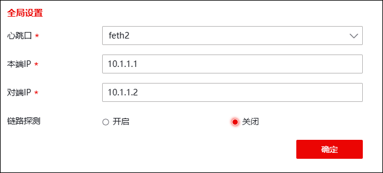
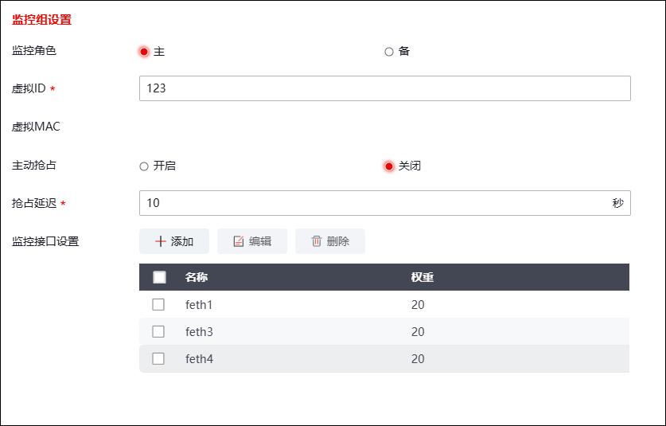

| 步骤1 | 选择 > > 。 |
点击“”图标，配置模式选择“主备模式”，配置心跳口地址，如下图所示。

设置完成，点击【确定】按钮。
| 步骤2 | 配置监控组 |
1）设置主墙的角色为“主”，并将feth1、feth3、feth4设置为管理组的监控接口，如下图所示。

2）可根据需求配置链路绑定、BFD绑定，配置完成后点击【确定】按钮。
| 步骤3 | 选择 > > 。 |
监控组点击“开启”，功能状态变为“开启”，则已启动防火墙的双机热备功能。
待备墙的接口及双机热备配置完成后，点击【立即同步】按钮，将主墙的所有配置信息同步到备墙。